Menu: Estoque > Cadastros · Situação do manual: Em ajuste (tela testada em 18/11/2026, com 40 prints; completa com ressalvas (19/11/2026: IMPRIMIR, EXCEL e etiqueta exercitados, com mais 4 prints; o IMPRIMIR não devolve relatório, DV-EST-N-085, e a etiqueta do T.MED-020 não voltou): falta o perfil sem permissão) · Fonte dos prints: versão nova.
Para que serve
O Item é o cadastro do material (medicamento, insumo ou embalagem): código, descrição, tipo, grupo e subgrupo, custo, unidade de medida, estoque mínimo e máximo, peso e dimensões, controles (lote, validade, quarentena, Portaria 344 e outros) e os almoxarifados em que o item pode ser movimentado. Os demais cadastros e telas do Estoque leem este cadastro (o item recebe SJB, classe, classificação, unidade e almoxarifados; Recebimento, Endereçamento e movimentações o usam, mas essas telas ainda são provisórias e não foram testadas pela tela).
Antes de começar (o que precisa existir)
| O que precisa existir | Para quê | Onde se cadastra |
|---|---|---|
| Usuário administrador | Só ele abre o Estoque (DV-EST-N-001) | Principal > Administração |
| Grupo e Subgrupo | Campos Grupo e Subgrupo (o subgrupo tem asterisco) | Cadastros > Grupo do Item e Subgrupo do Item |
| Unidade de Medida | Campo Unid. de Medida* | Cadastros > Unidade de Medida |
| Almoxarifado ativo | Pelo menos um na grade "Almoxarifados (Movimentação)": sem ele o sistema recusa | Cadastros > Almoxarifado |
Passo a passo
- Abrir a tela. No menu Cadastros, clique em Item. O filtro traz Código, Descrição, Tipo, Grupo e Ativo; botões PESQUISAR e LIMPAR e o link Incluir. A grade só aparece depois de pesquisar.

- Pesquisar. Clique em PESQUISAR. A lista mostra CÓDIGO, DESCRIÇÃO, TIPO DE ITEM, ATIVO e os ícones de EDITAR, EXCLUIR, LOG e etiqueta (uma por linha); aparecem também IMPRIMIR e EXCEL e a paginação ("Página 1 de 3") com Anterior e Próxima.

- Incluir. Clique em Incluir. O formulário tem os quadros "Dados do Item", "Parâmetros de Armazenagem", "Controles", "Último Inventário", "Almoxarifados (Movimentação)" e "Justificativa". O campo NEB (texto) e o Código NEB (somente leitura, mostra "-") existem.
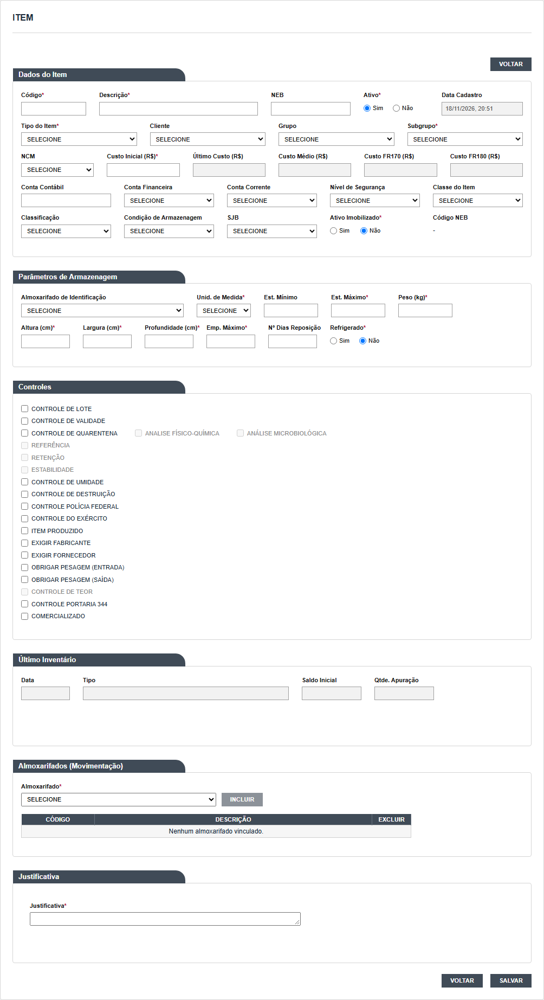
A imagem mostra o formulário inteiro: Código*, Descrição*, NEB, Ativo*, Data Cadastro, Tipo do Item*, Cliente, Grupo, Subgrupo*, NCM, Custo Inicial (R$)*, Último Custo, Custo Médio, Custo FR170, Custo FR180, Conta Contábil, Conta Financeira, Conta Corrente, Nível de Segurança, Classe do Item, Classificação, Condição de Armazenagem, SJB, Ativo Imobilizado*; Parâmetros de Armazenagem (Almoxarifado de Identificação, Unid. de Medida*, Est. Mínimo, Est. Máximo*, Peso (kg)*, Altura, Largura, Profundidade*, Emp. Máximo*, Nº Dias Reposição, Refrigerado*); as caixas de Controles; Último Inventário (somente leitura); a grade de almoxarifados e a Justificativa*.
- Preencher. Preencha os campos com asterisco, escolha o almoxarifado na lista da grade e clique em INCLUIR (ao lado da lista) para colocá-lo na grade, marque os controles que valem e escreva a Justificativa*. Mudar o Grupo não apaga os almoxarifados já colocados na grade (visto na versão nova; no legado a troca limpava a grade).
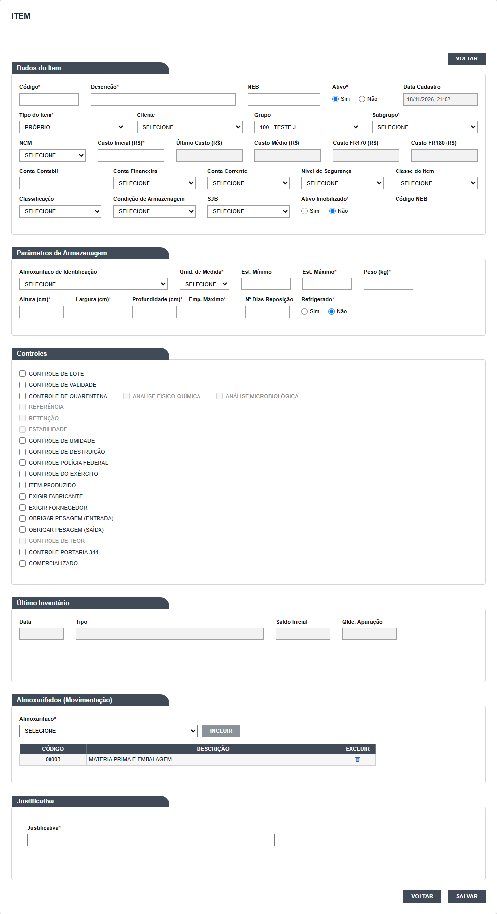
A imagem mostra o formulário depois de trocar o Grupo: a grade continua com o almoxarifado.
- Salvar o formulário vazio (para conhecer as mensagens). Sem almoxarifado na grade, SALVAR mostra só a faixa "Item não foi vinculado a nenhum Almoxarifado!", sem a pergunta de confirmação: o almoxarifado é conferido primeiro.

Com um almoxarifado na grade, a tela pergunta antes "Confirma a inclusão do registro?"; só depois do SIM confere os campos.
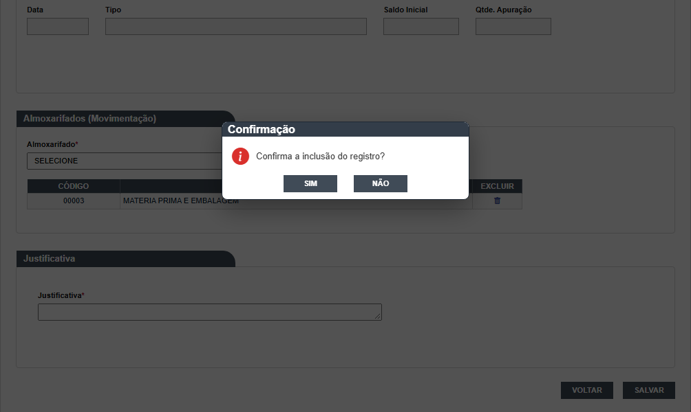
Depois do SIM aparece uma lista vermelha de 13 avisos: "A descrição do item é obrigatória!", "O Tipo do Item é obrigatório!", "Sub grupo é obrigatório", "Custo Inicial inválido.", "Unidade de Medida é obrigatória!", "Estoque Mínimo inválido.", "Estoque Máximo inválido.", "O campo Peso é obrigatório!", "Altura inválida.", "Largura inválida.", "Comprimento inválido.", "O campo Empilhamento é obrigatório!" e "A Justificativa é obrigatória!". O Código não tem aviso, porque o sistema gera o código quando ele está vazio. A imagem do passo 6 mostra essa lista ainda na tela, embaixo do formulário já preenchido (a faixa da tentativa anterior só some no clique seguinte).
- Confirmar. Com tudo preenchido, clique em SALVAR.
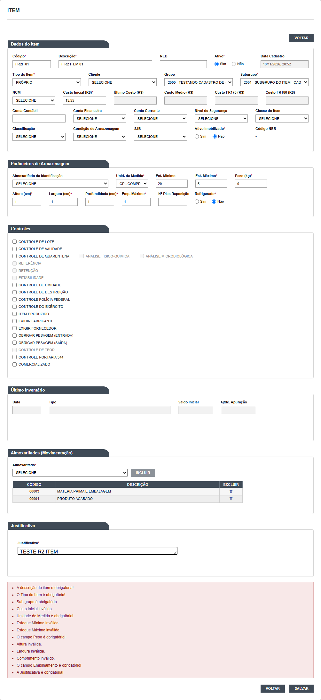
A imagem mostra o item T.R2IT01 preenchido com Est. Mínimo 20, Est. Máximo 5, Peso 0 e Custo 15,55 (digitado 1,555), com a lista de avisos da tentativa anterior ainda embaixo. A pergunta é "Confirma a inclusão do registro?" (título "Confirmação"):
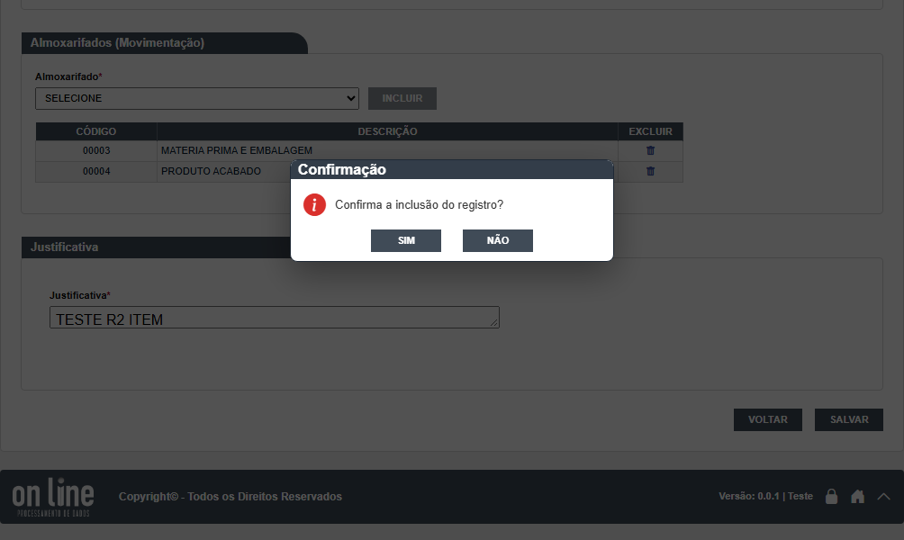
Depois do SIM, o alerta "Inclusão realizada com sucesso!":

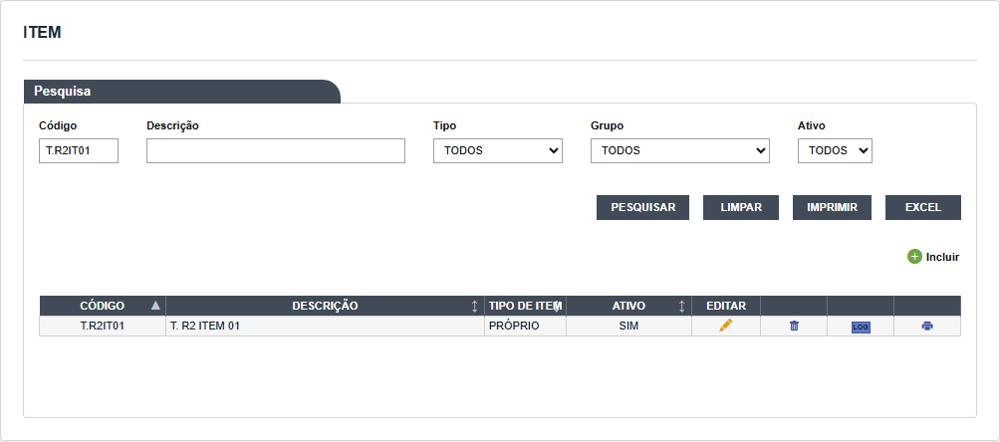
Reaberto pelo lápis, o item mostra o que foi gravado: mínimo 20, máximo 5, peso 0 e custo 15,55 (ver "Cuidados e falhas conhecidas"). O código fica travado:

- Alterar. Lápis, mude o dado e clique em SALVAR. A pergunta "Confirma a alteração do registro?" vem antes; depois do SIM, sem justificativa aparece a faixa "A Justificativa é obrigatória!".

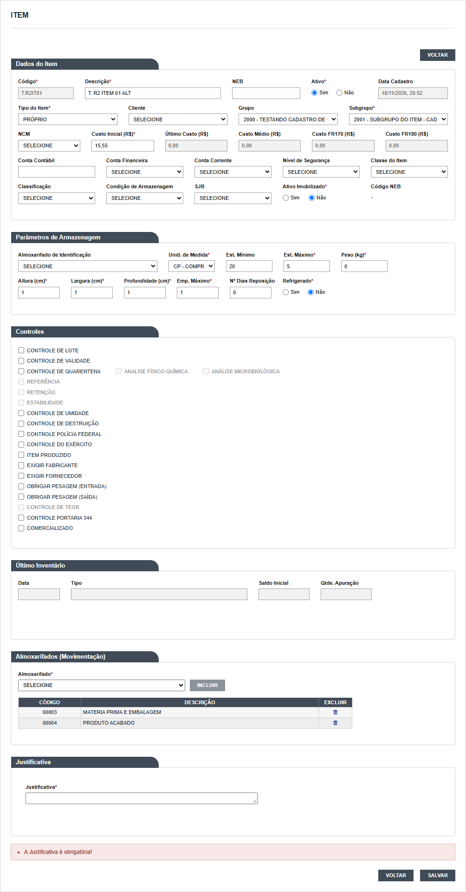
Com a justificativa, o sistema responde "Alteração realizada com sucesso!":
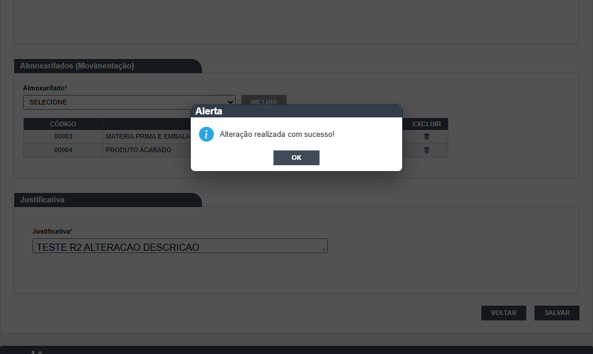
Para tirar um almoxarifado da grade na edição, use a lixeira da grade: a linha sai sem pergunta; se a grade ficar vazia, SALVAR responde "Item não foi vinculado a nenhum Almoxarifado!".

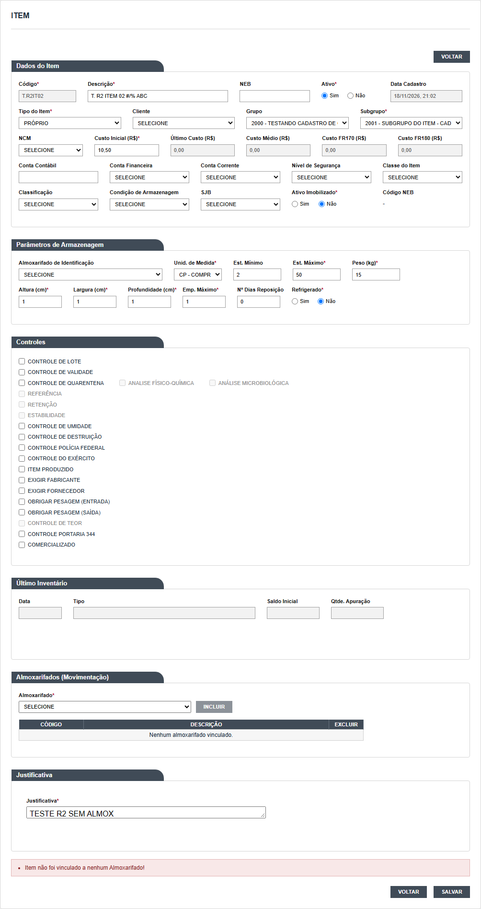
- Inativar. Marque Ativo = Não, escreva a justificativa, SALVAR e SIM: "Alteração realizada com sucesso!". O item continua na lista com ATIVO = NÃO e, reaberto, o formulário fica inteiro editável (só o Código é travado).
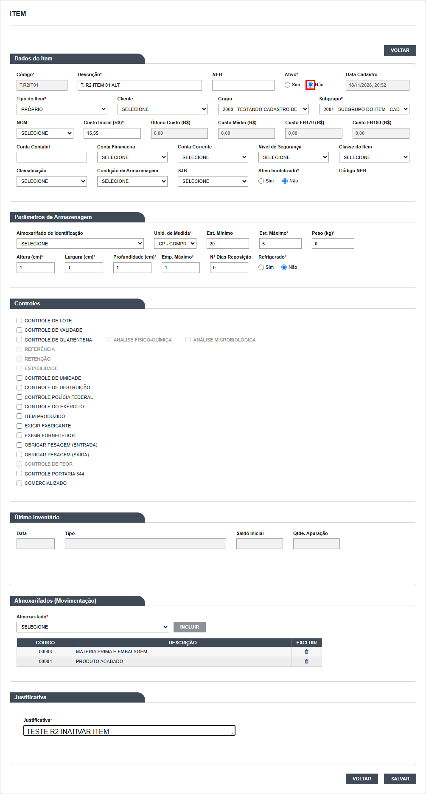

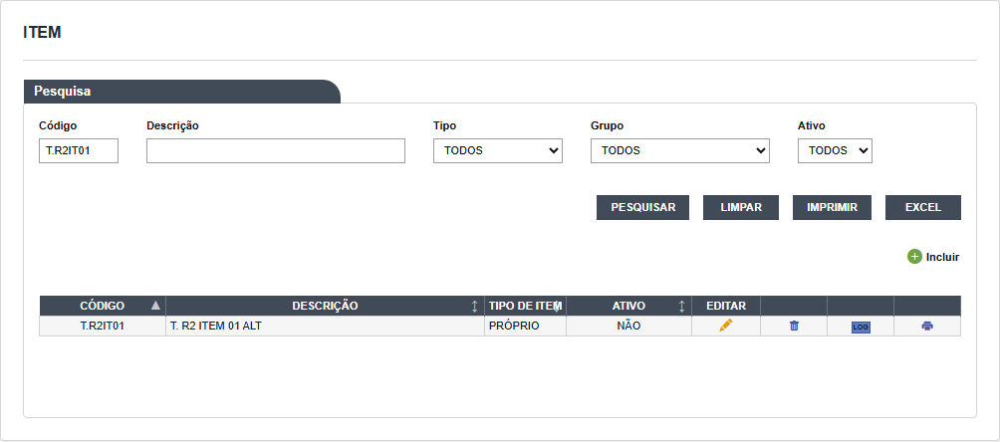
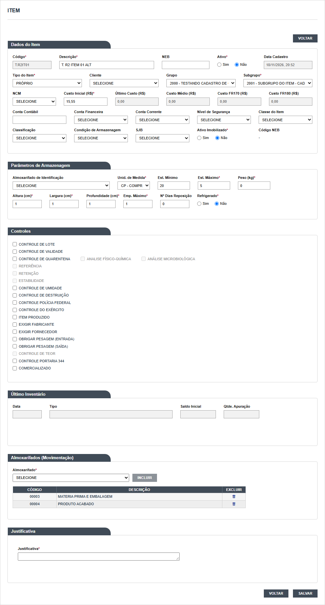
Inativar um item com saldo é aceito sem aviso de saldo: o T.MED-013, com saldo 500,000 na Disponibilidade de Estoque, foi inativado e o saldo continuou lá.


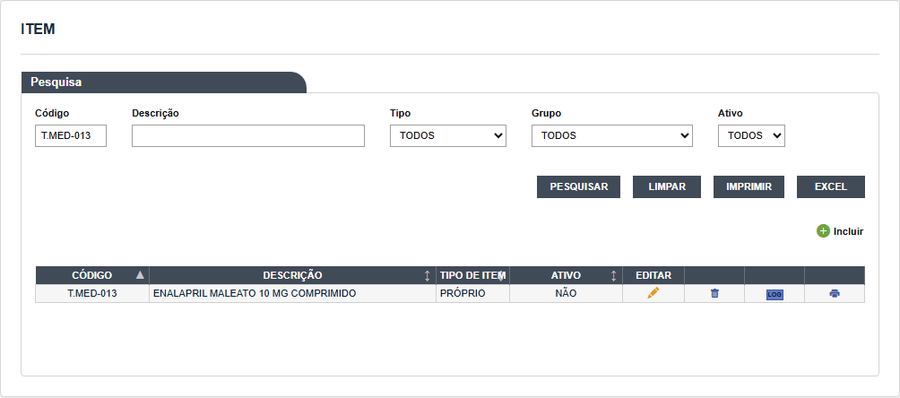
- Excluir. A lixeira abre o quadro de exclusão, com Código, Descrição, Justificativa* e os botões VOLTAR e EXCLUIR REGISTRO.
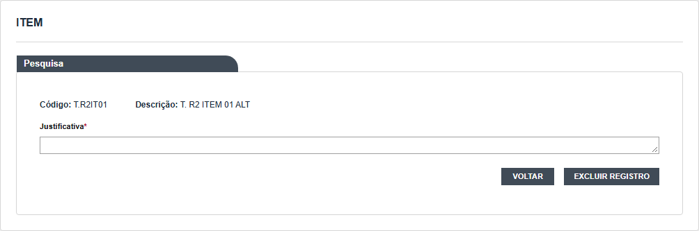
Sem justificativa, a pergunta "Confirma a exclusão do item?" (sem título) vem antes e, depois do SIM, a faixa "A justificativa é obrigatória!" (com "j" minúsculo) aparece no quadro:


Com justificativa, a exclusão é recusada nos dois casos: item com saldo (T.MED-013) e item novo, sem saldo e sem uso (T.R2IT01 e T.R2IT02). A mensagem é "Exclusão inválida, existem referências com outras tabelas." e não diz qual referência (DV-EST-N-068).
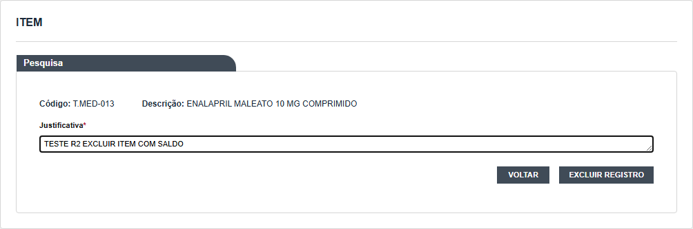
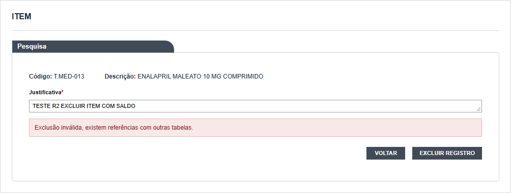


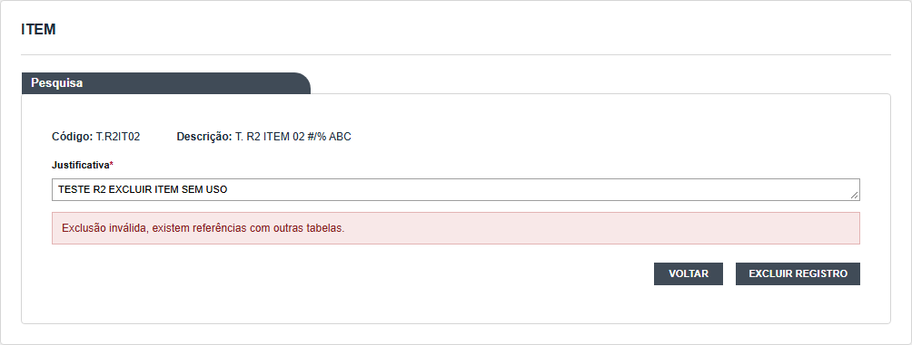
-
Histórico. Clique em LOG. A janela "Log Alteração - Item" mostra, por linha, o campo, o dado antigo, o dado novo, a data, a hora, o usuário (pelo nome, "ADMINISTRADOR T") e a justificativa. Num item incluído hoje, a linha "INCLUSÃO DO REGISTRO" vem com Dado Antigo e Dado Novo vazios (DV-EST-N-069); a alteração da descrição mostra o antigo e o novo.
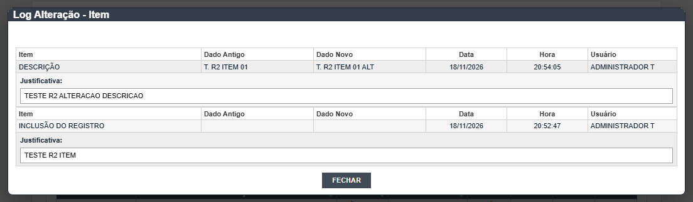
Item: histórico depois da alteração · clique para ampliar O histórico do T.MED-013 (item de 05/11/2026) mostra a inclusão com o dado novo ("T.MED-013 - ENALAPRIL MALEATO 10 MG COMPRIMIDO") e as inativações e reativações, cada uma com a justificativa:

Item com saldo: histórico · clique para ampliar -
Imprimir, Excel e etiqueta. Depois de PESQUISAR aparecem, ao lado de PESQUISAR e LIMPAR, os botões IMPRIMIR e EXCEL; em cada linha, o ícone da etiqueta (impressora) além de lápis, lixeira e LOG.
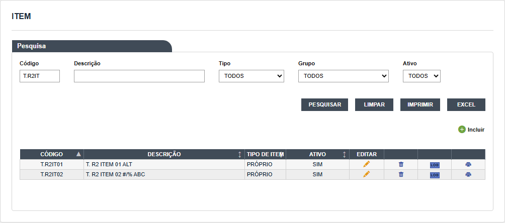
Item: lista com IMPRIMIR, EXCEL e a etiqueta · clique para ampliar A imagem mostra a lista do filtro T.R2IT (T.R2IT01 e T.R2IT02) com os botões IMPRIMIR e EXCEL e, em cada linha, lápis, lixeira, LOG e impressora.
- IMPRIMIR não devolve o relatório (DV-EST-N-085). O clique abre uma aba em branco, o navegador envia o pedido do relatório de itens e o servidor não responde em 100 s, com o filtro e sem filtro. Por isso não há imagem do relatório: caso Bloqueado no teste (responsável: desenvolvimento ou TI). Nas telas Endereço do Estoque e Disponibilidade de Estoque o IMPRIMIR funciona.
- EXCEL baixa um CSV de verdade:
itens_<data>_<hora>.csv, com ponto e vírgula, colunasID_ITEM;CODIGO;DESCRICAO;GRUPO;SUBGRUPO;TIPO_ITEM;ATIVO(cabeçalho em maiúsculas, sem acento) e só as linhas da pesquisa. Não traz a unidade, o NCM nem os almoxarifados e mostra o código interno ID_ITEM. Diferente do Excel de Centro de Custo e Disponibilidade de Estoque, que entregam uma página HTML (DV-EST-N-071, reteste de 19/11/2026: não se repete no Item).
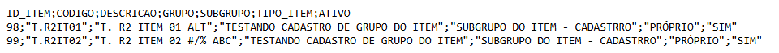
Item: conteúdo do arquivo EXCEL · clique para ampliar A imagem mostra o conteúdo do arquivo: o cabeçalho de sete colunas e as duas linhas T.R2IT01 e T.R2IT02.
- Etiqueta do item. O ícone da impressora de T.R2IT01 baixa um PDF de etiqueta, sem janela nem mensagem ao clicar (o arquivo vem em segundo plano). A etiqueta traz "LABORATÓRIO QUÍMICO FARMACÊUTICO", PRODUTO (código e descrição), GRUPO, SUBGRUPO, UNIDADE DE MEDIDA (CP - COMPRIMIDO), PESO (0,000, como no cadastro), as caixas LOTE, VALIDADE, QUARENTENA e PESAGEM (todas NÃO) e o código de barras do código do item. Para T.MED-020 (item com lote) a etiqueta não veio em 30 s, em duas tentativas: caso Bloqueado no teste (responsável: desenvolvimento ou TI).

Item: lista depois de clicar na etiqueta · clique para ampliar 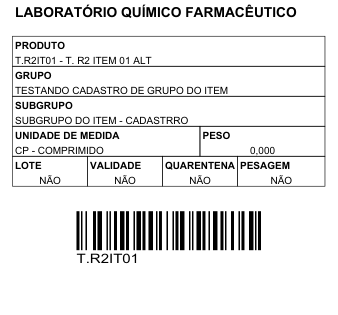
Item: etiqueta de T.R2IT01 · clique para ampliar A primeira imagem mostra a lista logo depois do clique, sem aviso; a segunda mostra o conteúdo da etiqueta.
Ícones e botões da lista
| Ícone ou botão | O que faz |
|---|---|
| PESQUISAR / LIMPAR | Filtra / esvazia |
| IMPRIMIR | Deveria abrir o relatório de itens; não responde (DV-EST-N-085) |
| EXCEL | Baixa um CSV (ponto e vírgula) com as linhas da pesquisa |
| Incluir | Abre o formulário vazio |
| Lápis, lixeira, LOG | Editar, excluir (com justificativa; é recusada, DV-EST-N-068), histórico |
| Impressora da linha | Baixa a etiqueta do item em PDF (T.R2IT01 saiu; a de T.MED-020 não voltou em 30 s) |
| Anterior / Próxima | Navegam pelas páginas (a lista tinha 3) |
Botões e ações
PESQUISAR, LIMPAR, IMPRIMIR, EXCEL, Incluir, lápis, lixeira, LOG, etiqueta (impressora), INCLUIR (almoxarifado), lixeira da grade (EXCLUIR), SALVAR, VOLTAR, EXCLUIR REGISTRO.
Mensagens do sistema
"Confirma a inclusão do registro?" · "Confirma a alteração do registro?" · "Confirma a exclusão do item?" · "Item não foi vinculado a nenhum Almoxarifado!" · "Esse código já está cadastrado." · "Preencha os campos obrigatórios antes de salvar." · os 13 avisos do passo 5 · "A Justificativa é obrigatória!" (alteração) · "A justificativa é obrigatória!" (exclusão) · "Inclusão realizada com sucesso!" · "Alteração realizada com sucesso!" · "Exclusão inválida, existem referências com outras tabelas." · "Não foi possível carregar os itens." (403).